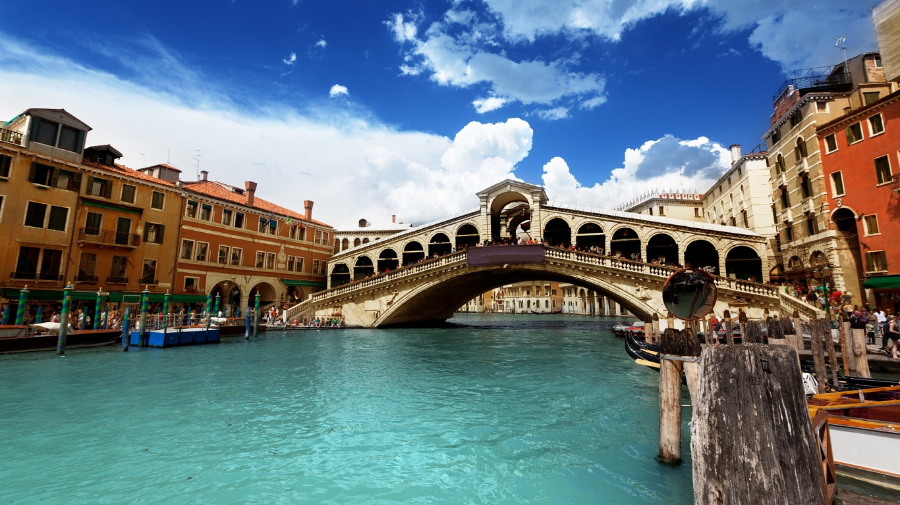

A to Z Search
Barcelona
Budapest
Cuba
Greece
Helsinki
Hong Kong
London
Maldives
Maui
Paris
Prague
Sydney
Taiwan
Vancouver
Venice
|
Venice
Country: Italy
Rank:3
Tag:Historical; Lifestype

Imagine the audacity of building a city of marble palaces on a lagoon – and that
was only the start.
People who have been to Maldives:
-
Why I Love Venice
By Cristian Bonetto, Writer: Venice is the consummate magician. It makes marble
palaces vanish into silent fogs, labyrinthine calli (streets) disappear at the
whim of moody tides, and can even turn the most pedestrian of people into
fantastical, masked creatures. Just like its world-famous Carnevale, Venice
thrives on mystery and awe, from the secret passageways that riddle Gothic
Palazzo Ducale, to the esoteric powers of the Basilica di Santa Maria della
Salute, to the inexplicable radiance of Titian's Assunta altarpiece. After
countless sojourns, I am yet to tire of the place. Some spells are simply too
hard to break.
reviewID:r3
Highlights:
-
Venetian Feasts
Garden islands and lagoon aquaculture yield speciality produce and seafood you
won’t find elsewhere – all highlighted in inventive Venetian cuisine, with
tantalising traces of ancient spice routes. The city knows how to put on a royal
spread, as France’s King Henry III once found out when faced with 1200 dishes
and 200 bonbons. Today such feasts are available in miniature at happy hour,
when bars mount lavish spreads of cicheti (Venetian tapas). Save room and time
for a proper sit-down Venetian meal, with lagoon seafood to match views at
canalside bistros and toasts with Veneto’s signature bubbly, prosecco.
-
Historic Firsts
The city built on water was never afraid to attempt the impossible. When plague
struck, Venice consulted its brain trust of Mediterranean doctors, who
recommended a precaution that has saved untold lives since: quarantine. Under
attack by Genovese rivals, Venice’s Arsenale shipyards innovated the assembly
line, producing a new warship every day to defeat Genoa. After Genoa backed
Christopher Columbus' venture to the New World, Venice's shipping fortunes began
to fade – but Venice wasn't about to relinquish the world stage, going on to
become the launching pad for baroque music and modern opera.
Things To Do:
- Palazzo Ducale
address: Piazzetta San Marco 52, Venice, Italy gettingThere Ferry:San Zaccaria moreInfo:www.palazzoducale.visitmuve.it
People who like this place also like to go to:
Greece
Barcelona
Prague
source:
Lonely Planet:
www.lonelyplanet.com/helsinki
|